Подбор продукта

Перемещайте кружок по полю или нажмите на нужное место. Стрелки и клавиши 1–9 также меняют выбор. Сверху появится один или два продукта.
Откройте как приложение
Без адресной строки и нижней панели Safari. Добавьте подборщик на экран «Домой».
Эти действия выполняются в меню Safari. После добавления запускайте подборщик с иконки.